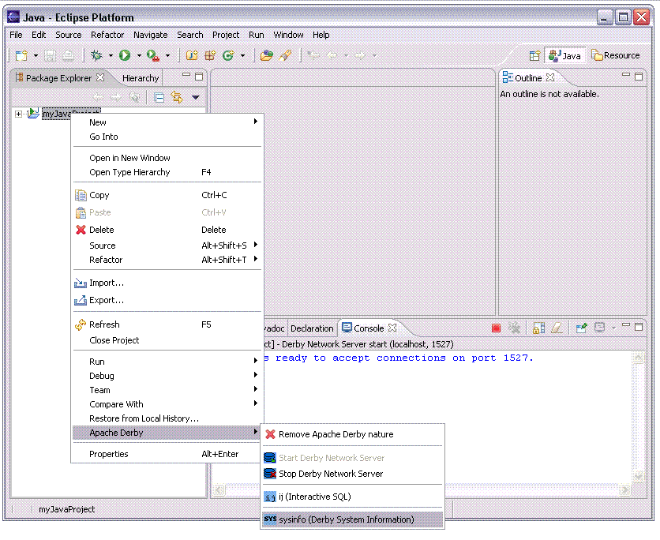
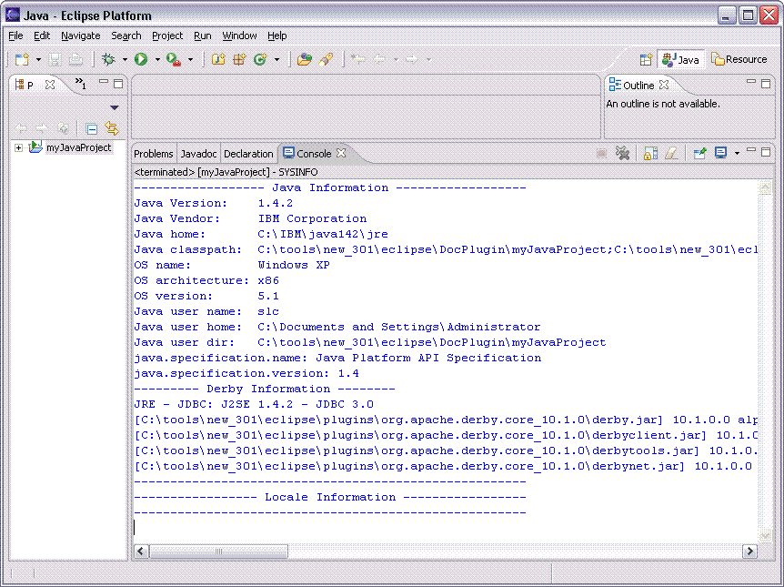

Running sysinfo for environment information
sysinfo provides information about the Derby system. This tool is
useful in determing the current Java and Derby environments.
To launch sysinfo:
-
Select the project and bring up the context menu. Select the menu item, sysinfo (Derby System Information).

-
The Console view will show the output from running the sysinfo
command. The output from sysinfo is divided into three sections:
-
Java Information
-
Derby Information
-
Locale Information (if present)
-
Additional info about using sysinfo can be found in the Derby Tools & Utility Guide.
Sample output from running sysinfo is shown below.
